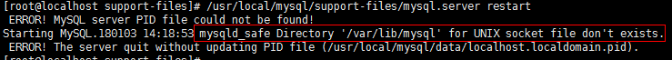
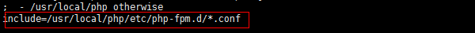
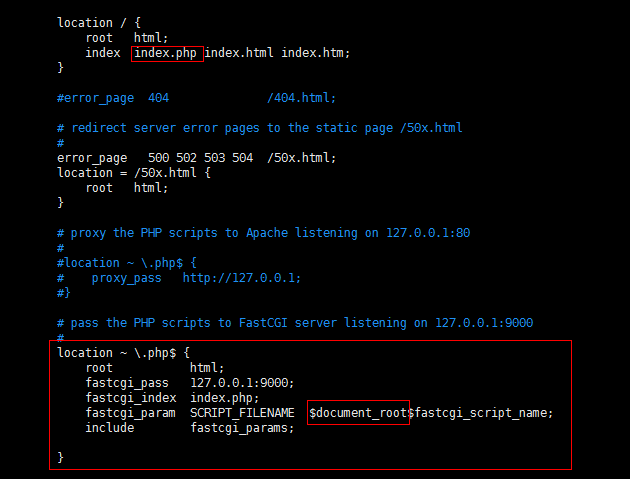

LNMP环境搭建
经过一番折腾，终于将LNMP环境搭建完成了。本文介绍的LNMP环境是在windows的Oracle VM VirtualBox中的Centos虚拟机上搭建的，各个软件的版本为：Centos7 + Nginx1.12.2 + Mysql-5.6.38 + PHP7.2.0。本文是在假设Centos7虚拟机已经安装完成的前提下进行介绍的，若尚未安装，可以前往Centos官网下载对应的ios文件安装，我下载的是这个：http://mirrors.tuna.tsinghua.edu.cn/centos/7/isos/x86_64/CentOS-7-x86_64-DVD-1708.iso，然后按照网上的教程进行安装就可以了，教程实例：https://jingyan.baidu.com/article/9c69d48f8ec01613c8024e58.html。
Centos7虚拟机安装完成就可以开始编译安装Nginx、Mysql和PHP了，下面容我一一道来。
一、安装前
1. 更新系统软件：
yum update
2. 查看是否已安装wget:
rpm -qa wget
否则安装：
yum install wget
3. 查看是否已安装编译器：
rpm -qa gcc
否则安装：
yum install gcc gcc-c++
二、安装Nginx
1. 安装nginx依赖包
nginx的Rewrite模块和HTTP核心模块会使用到PCRE正则表达式语法：
yum -y install pcre pcre-devel
nginx的各种模块中需要使用gzip压缩：
yum -y install zlib zlib-devel
安全套接字层密码库：
yum -y install openssl openssl-devel
2. 下载nginx包并解压（到/usr/local/src目录中）
cd /usr/local/src
wget http://nginx.org/download/nginx-1.12.2.tar.gz
tar -zxvf nginx-1.12.2.tar.gz
3. 编译安装（到/usr/local/nginx目录中）
cd nginx-1.12.2
./configure --prefix=/usr/local/nginx
make
make install
4. 创建并设置nginx运行账号：
groupadd nginx
useradd -M -g nginx -s /sbin/nologin nginx
cd /usr/local/nginx/conf
vim nginx.conf，设置user参数如下：
user nginx nginx
其他配置参数暂时无需改动。
5. 设置nginx为系统服务
vim /lib/systemd/system/nginx.service
文件内容：
[Unit]
Description=nginx
After=network.target
[Service]
Type=forking
ExecStart=/usr/local/nginx/sbin/nginx
ExecReload=/usr/local/nginx/sbin/nginx -s reload
ExecStop=/usr/local/nginx/sbin/nginx -s stop
PrivateTmp=true
[Install]
WantedBy=multi-user.target
6. 设置nginx开机自启动
systemctl enable nginx.service
7. 开启nginx服务：
systemctl start nginx.service
查看nginx是否启动成功：
ps aux | grep nginx
在虚拟机浏览器中访问测试：
http://localhost
出现以下界面则表示可以成功访问：
8. 防火墙开放80端口（nginx默认使用80端口，可在nginx.conf中配置，若无需进行远程访问则不需要开放端口）
永久开放80端口：
firewall-cmd --zone=public --add-port=80/tcp --permanent
重启防火墙：
firewall-cmd --reload
查看防火墙开启状态：
systemctl status firewalld
查看80端口是否开放成功：
firewall-cmd --zone=public --query-port=80/tcp
可在windows宿主主机浏览器直接访问虚拟机ip测试是否可以成功访问。
三、安装Mysql
1. 卸载已有mysql
查看是否已安装mysql：
rpm -qa mysql
有则卸载：
rpm -e --nodeps 文件名称
是否存在与mysql相关的文件或目录：
whereis mysql
是则删除。
查看是否存在mariadb：
rpm -qa | grep mariadb
存在则卸载：
rpm -e --nodeps 文件名 //文件名是上一个命令查询结果
存在/etc/my.cnf，则需要先删除：
rm /etc/my.cnf
2. 安装编译mysql需要的依赖包
yum install libevent* libtool* autoconf* libstd* ncurse* bison* openssl*
3. 安装cmake（mysql5.5之后需要用cmake支持编译安装）
查看是否已安装cmake：
rpm -qa cmake
没有则下载编译安装：
cd /usr/local/src
wget http://www.cmake.org/files/v2.8/cmake-2.8.12.1.tar.gz
tar -xf cmake-2.8.12.1.tar.gz
cd cmake-2.8.12.1
./configure
make
make install
检查cmake是否安装成功：
cmake --version
4. 下载mysql包并解压（到/usr/local/src目录）
cd /usr/local/src
wget http://cdn.mysql.com/Downloads/MySQL-5.6/mysql-5.6.38.tar.gz
tar -zxvf mysql-5.6.38.tar.gz
5. 编译安装（到/usr/local/mysql目录）
cd mysql-5.6.38
cmake -DCMAKE_INSTALL_PREFIX=/usr/local/mysql -DMYSQL_DATADIR=/usr/local/mysql/data -DSYSCONFDIR=/etc -DWITH_MYISAM_STORAGE_ENGINE=1 -DWITH_INNOBASE_STORAGE_ENGINE=1 -DWITH_MEMORY_STORAGE_ENGINE=1 -DWITH_READLINE=1 -DMYSQL_UNIX_ADDR=/var/lib/mysql/mysql.sock -DMYSQL_TCP_PORT=3306 -DENABLED_LOCAL_INFILE=1 -DWITH_PARTITION_STORAGE_ENGINE=1 -DEXTRA_CHARSETS=all -DDEFAULT_CHARSET=utf8 -DDEFAULT_COLLATION=utf8_general_ci
make（此过程需花费大概20-30分钟）
make install
6. 配置mysql
groupadd mysql
useradd -M -g mysql -s /sbin/nologin mysql
chown -R mysql:mysql /usr/local/mysql
7. 初始化配置
cd /usr/local/mysql/scripts
./mysql_install_db --basedir=/usr/local/mysql --datadir=/usr/local/mysql/data --user=mysql
8. 设置mysql为系统服务
vim /lib/systemd/system/mysql.service
文件内容：
[Unit]
Description=mysql
After=network.target
[Service]
Type=forking
ExecStart=/usr/local/mysql/support-files/mysql.server start
ExecStop=/usr/local/mysql/support-files/mysql.server stop
ExecRestart=/usr/local/mysql/support-files/mysql.server restart
ExecReload=/usr/local/mysql/support-files/mysql.server reload
PrivateTmp=true
[Install]
WantedBy=multi-user.target
9. 设置mysql服务开机自启动
systemctl enable mysql.service
10. 启动mysql
systemctl start mysql.service
若是启动失败：

直接使用/usr/local/mysql/support-files/mysql.server restart启动可以看到详细错误原因：

若是这个原因，/var/lib/mysql这个目录（用于存放mysql.sock）不存在的话，手动创建就好了：
mkdir /var/lib/mysql
chown -R mysql:mysql /var/lib/mysql
再次启动，成功了！
查看是否启动成功：
ps aux | grep mysql
11. 登录mysql并设置root密码：
/usr/local/mysql/bin/mysql -u root
set password=password('123456');
四、安装PHP
1. 安装php依赖包
yum install libxml2 libxml2-devel openssl openssl-devel bzip2 bzip2-devel libcurl libcurl-devel libjpeg libjpeg-devel libpng libpng-devel freetype freetype-devel gmp gmp-devel libmcrypt libmcrypt-devel readline readline-devel libxslt libxslt-devel
若提示yum中没有可用的软件包libmcrypt和libmcrypt-devel，则需要手动编译安装，可以先在windows宿主主机中前往libmcrypt官网下载然后使用rz指令将包上传至centos7进行编译安装。我下载的包为libmcrypt-2.5.8.tar.gz：
tar -zxvf libmcrypt-2.5.8.tar.gz
cd libmcrypt-2.5.8
./configure --prefix=/usr/local/libmcrypt
make
make install
2. 下载php包并解压
cd /usr/local/src
在windows上前往php官网下载php-7.2.0包，然后使用rz指令将下载好的php安装包上传到centos7上，解压：
tar -zxvf php-7.2.0.tar.gz
3. 编译安装（到/usr/local/php目录）
cd php-7.2.0
./configure --prefix=/usr/local/php --disable-fileinfo --enable-fpm --with-config-file-path=/etc --with-config-file-scan-dir=/etc/php.d --with-openssl --with-zlib --with-curl --enable-ftp --with-gd --with-xmlrpc --with-jpeg-dir --with-png-dir --with-freetype-dir --enable-gd-native-ttf --enable-mbstring --with-mcrypt=/usr/local/libmcrypt --enable-zip --enable-mysqlnd --with-mysqli=mysqlnd --with-pdo-mysql=mysqlnd --with-mysql-sock=/var/lib/mysql/mysql.sock --without-pear --enable-bcmath
（注意：--with-mcrypt参数指定的是libmcrypt的安装目录。Php7不再使用mysql的库来支持mysql的连接，而是启用了mysqlnd来支持，所以php7的编译已经不再使用--with-mysql参数指定mysql的安装位置了，若想支持mysql，需要设置--enable-mysqlnd、--with-mysqli和--with-pdo-mysql=mysqlnd参数，--with-mysql-sock指定的是编译mysql时-DMYSQL_UNIX_ADDR参数指定的文件）
make（此过程需花费大概20分钟）
make install
4. 将php包解压目录中的配置文件放置到正确位置（configure命令中的--with-config-file-path设置的位置）
cp php.ini-development /etc/php.ini
5. 创建并设置php-fpm运行账号
groupadd www-data
useradd -M -g www-data -s /sbin/nologin www-data
cd /usr/local/php/etc
cp php-fpm.conf.default php-fpm.conf
vim php-fpm.conf
发现搜索不到“user”（设置运行账号的位置），但发现文件的最后一行：

所以：
cd php-fpm.d
cp www.conf.default www.conf（否则include匹配不到文件）
vim www.conf
搜索“user”设置运行账号：
user=www-data
group=www-data
6. 配置nginx支持php
vim /usr/local/nginx/conf/nginx.conf

修改完成之后记得重启nginx服务：
systemctl start nginx.service
7. 设置php-fpm为系统服务：
vim /etc/systemd/system/php-fpm.service
文件内容：
[Unit]
Description=php-fpm
After=network.target
[Service]
Type=forking
ExecStart=/usr/local/php/sbin/php-fpm
PrivateTmp=True
[Install]
WantedBy=multi-user.target
8. 设置php-fpm服务开机自启动：
systemctl enable php-fpm.service
9. 启动php-fpm：
systemctl start php-fpm.service
查看是否启动成功：
ps aux | grep php-fpm
10.写一个php脚本测试nginx是否已支持php，php是否已支持mysql。
1 2 | <?phpphpinfo(); |
至此，LNMP搭建完成！
PHP扩展安装说明：
若想安装一些PHP扩展，首先可以在PHP源码目录下的ext子目录中查找是否存在你想安装的扩展，不存在则下载，存在则直接进入扩展源码目录进行安装操作，下面以安装pcntl扩展为例进行说明。
首先编译源码安装pcntl扩展：
cd /usr/local/src/php-7.0.27/ext/pcntl （进入扩展源码目录）
/usr/local/php/bin/phpize（取决于你安装php之后phpize文件的位置）
./configure --with-php-config=/usr/local/php/bin/php-config（取决于你安装php之后php-config文件的位置）
make
make install
然后修改php配置文件：
vim /etc/php.ini
extension=pcntl.so
最后重启php-fpm服务：
systemctl reload php-fpm.service
这样pcntl就安装完成了！
有个疑惑的地方，刚开始想安装mysql5.7.20的，但是在编译（make）的时候，真的很慢，有时候卡了大半天都不动的，不知道啥原因，试了很多次，浪费了很多时间啊，泪奔。最后实在受不了，改用mysql5.6.38，30分钟不到就编译完成了，阿西吧，有时候还是不要太纠结。。。


php下载:
indows上前往php官网下载php-7.2.0包，然后使用rz指令将下载好的php安装包上传到centos7上，解压：
// todo: 我的 直接下载的,没有去
// todo: 进入 http://php.net/get/php-7.2.4.tar.gz/from/a/mirror 选择中国的镜像, 右键复制链接
wget http://php.net/get/php-7.2.4.tar.gz/from/a/mirror
wget http://cn2.php.net/distributions/php-7.2.4.tar.gz
tar -zxvf php-7.2.0.tar.gz
// todo: 我的是7.2.4
// todo: 上面下载的第一个下载默认叫mirror, 第二个是重定向后的地址, 下载下来是对应文件名, 所以上面这条命令自行调整 但是不影响解压--已经测试
使用 composer 安装YII2报错:(其他项目不涉及utf应该不影响)
PHP Fatal error: Uncaught exception 'ErrorException' with message 'preg_split(): Compilation failed: this version of PCRE is compiled without UTF support at offset 0' in phar:///usr/local/bin/composer/vendor/symfony/console/Application.php:1097
解决：
重新安装pcre， 使其支持utf， 之前是yum安装 默认应该不支持
注意 我安装最新的2版本,最新的10.多的出错, 换回8.4的成功
注意： O大写 表示指定保存的名称
wget -O pcre-8.41.tar.gz https://sourceforge.net/projects/pcre/files/pcre/8.41/pcre-8.41.tar.gz/download